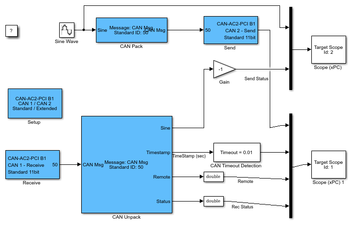

The model in this topic supports the CAN_MESSAGE data type.
The Receive blocks for the supported CAN boards allow you to output
the timestamp at which the latest corresponding CAN message was received. This
information can be used to detect that another CAN node is not sending CAN messages and
special action must be taken. Assume that a CAN message is expected from another CAN
node every 2 milliseconds. If a new message is not received within 10 milliseconds, the
other CAN node is considered faulty, and the Simulink® real-time application must
proceed accordingly.
The CAN blockset in the
Simulink®
Real-Time™ I/O block library provides a utility block called
CAN Timeout Detection. This subsystem uses the timestamp
information to calculate the timeout condition.
To use this block:
Select the Output timestamp check box of a CAN
Unpack block.
Connect the Timestamp output port to the input port of a
CAN Timeout Detection block.
Connect the output port of the CAN Timeout Detection block
to a sink, such as a real-time Scope block.
Set the Timeout value to the required value, such as
0.01 s.
Applying these steps results in the model shown in the figure.
